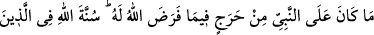
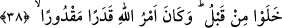

görmedim.” demiştir.
Fakirlere benzeyişi, misâfirperverliği ve ikrâmı sebebiyle ona “fakirlerin annesi”
derlerdi. Hz. Peygamber’den sonra hanımlarından bu dünyâdan ayrılan ilk kadın Hz.
Zeyneb idi. Hicretin 20. yılında 53 yaşında Medine’de vefat etti. Hz. Ömer namazını
kıldırdı ve Bakî‘ mezarlığına defnedildi.
Allah Teâlâ Hz. Zeyneb’e bedel Zeyd (r.a.)’a cennette bir câriye vermiştir. Nitekim
Hz. Peygamber (s.a.) şöyle buyurmuştur: “Dudağı siyaha çalan bir câriye beni
karşıladı. Pek de hoşuma gitti. Ben ona: “Ey câriye, sen kime âidsin?” diye sordum.
Zeyd b. Hârise’ye âidim” dedi.”[220] Yâni mi‘râc gecesinde Rasûlullah (s.a.) yedinci
kat semâyı geçtikten sonra bu câriye cennetten çıkmış ve O’nu karşılamıştır.
Süheylî, Zeyd (r.a.)’ın Kur’an’da ismiyle zikredilmesine dâir şöyle bir hikmet
açıklamıştır: “Onları (evlâd edindiklerinizi) babalarına nisbet ederek çağırın.” (el-
Ahzâb, 33/5) âyeti nâzil olup Zeyd (r.a.)’a ‘Zeyd b. Muhammed’ değil de ‘Zeyd b.
Hârise’ denilmeye başlanınca, ondan bu şeref alınınca ve Allah onun bu yüzden yalnız
kaldığını bildiği için sahâbeden başkalarının değil onun ismini Kur’an’da zikrederek
onu şereflendirdi. Bundan sonra artık Zeyd’in ismi mihrablarda okunur oldu. Âyette
buna ilâve olarak “Allâh’ın” îmanla “nîmet verdiği kimseye … diyordun” buyrulması
da Zeyd (r.a.)’ın cennet ehlinden olduğuna delâlet etmektedir. O daha ölmeden önce
bunu bilmiştir. Bu da başka bir fazîlettir.
Sonra Zeyd (r.a.)’dan nakledilen onun Rasûlullah (s.a.)’i kendine tercih etmesi, ancak
itikadi kuvvetli, kemâl yolunda sâbit olan bir salikte gerçekleşir. İşte ashâbın hâline bak
ve düşün ki Allah sana perdeyi açıversin.
Rivâyet edilir ki Hz. Peygamber (a.s.) hicretten sonra muhâcirlerden Abdurrahman b.
Avf ile ensardan Sa‘d b. Rebî‘/Rübeyyi‘i kardeş yaptı. İşte o zaman Sa‘d (r.a.),
Abdurrahman (r.a.)’a: “Ey Abdurrahman! Ben ensarın malı en çok olanlarındanım. Ben
bu malı seninle paylaşacağım. Benim iki hanımım var. Birini boşayayım, iddeti dolunca
sen onunla evlen,” dedi. Abdurrahman (r.a.): “Allah sana âileni ve malını mübârek
kılsın” diye duâ etti. İnsânü’l-uyûn’da böyle geçmektedir. Sonra zaman geçti, her iş
tersine döndü. Allah, bid‘atları ve hevâyı ortadan kaldırmak için kendisini onların
karşısına koyan, eteğini kötülükler tarafına sürüklemekten sakınan kimseye rahmet
eylesin.
38. Allâh’ın, kendisine helâl kıldığı şeyde Peygamber’e herhangi bir vebâl yoktur.
Önce gelip geçenler arasında da Allâh’ın âdeti böyle idi. Allâh’ın emri mutlaka
yerine gelecek, yazılmış bir kaderdir.